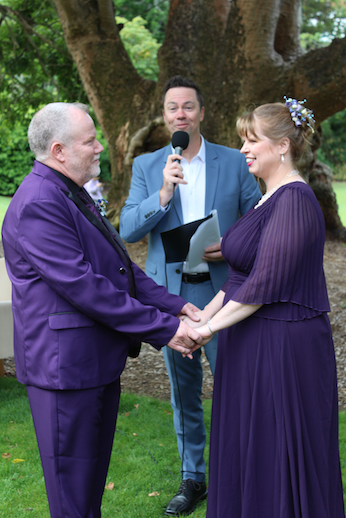
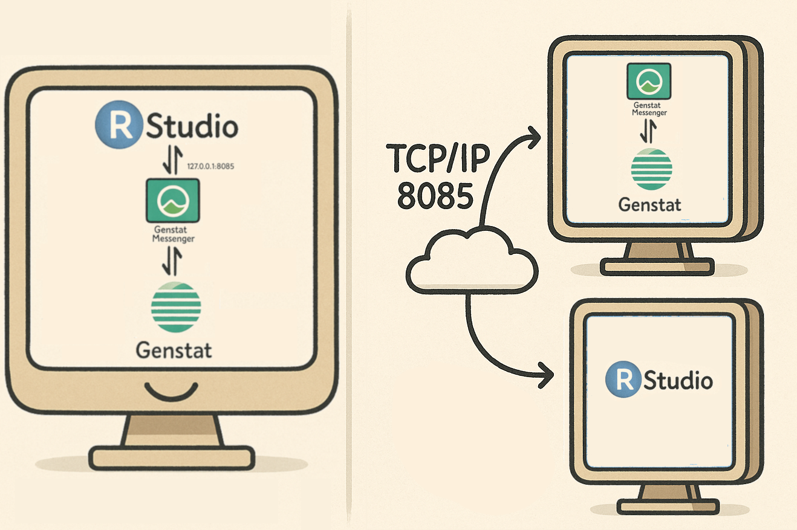
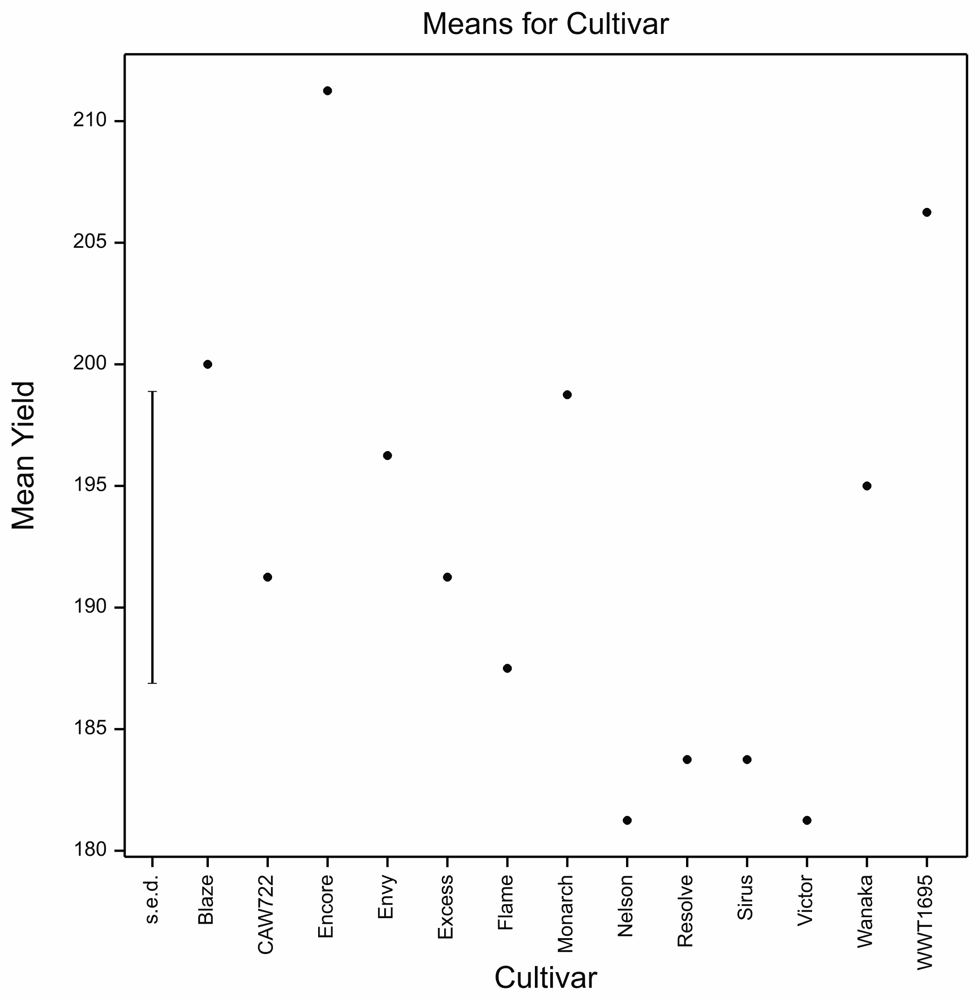

Reproducible Research with Genstat
2025-12-28
Reproducible research ensures that scientific findings can be independently verified by others using the same data and methods.
Markdown is a lightweight markup language used to format plain text into styled documents.
Markdown plays a key role in supporting reproducibility by allowing researchers to combine code, results, and narrative text in a clear, lightweight format.
Tools like R Markdown or Jupyter Notebooks use Markdown to embed executable code alongside explanations and outputs, making it easy to document workflows, share analyses, and regenerate results consistently across different environments.
Neither Simon nor I know much about Jupyter Notebooks, but we do know about R Markdown…

Some of you may know that this happened last November…
Users of R Markdown rely on a couple of features:
This may seem obvious, but a naïve mechanism to pass code and results back and forth is batch processing. This process:
The script might just be a character string, and so might the outputs.
The session in this process has no persistence.
It is very common to do something like this in R Markdown:
and then later you might embed this in the text:
This will not work unless the R session (or in this case the environment) containing the variable fit persists between the two chunks.
Genstat Messenger:

Start Genstat Messenger
Open a new R Markdown (or Quarto) document in RStudio, and
set the knitr_engine for Genstat:
Note: The choice of gs is arbitrary.
It is just a label we will use to tell knitr to use the Genstat engine.
Yes, but that is not very exciting James! Let us take it up a notch:
As an example we will analyse the built-in Wheat Trials data set. It contains information from a crop trial in New Zealand with 13 different cultivars.
IMPORT [PRINT=*] '%DATA%/WheatTrials.xlsx'; SHEET='Trial A1'
TREATMENTS Cultivar
BLOCKS Rep
ANOVA [PRINT=aov; FPROB=yes; PSE=LSD] Mean_Population_m2| Source of variation | d.f. | s.s. | m.s. | v.r. | F pr. |
| Rep stratum | 3 | 344.2 | 114.7 | 0.40 | |
| Rep.Units stratum | |||||
| Cultivar | 12 | 4354.8 | 362.9 | 1.26 | 0.283 |
| Residual | 36 | 10368.3 | 288.0 | ||
| Total | 51 | 15067.3 | |||
Genstat users are likely to want to include graphics in their reports. We can do that too.
Calls to Genstat’s graphing procedures result in a PNG image, which are be displayed directly in the output document. These images are saved locally with filenames like ‘graph_1.png’, ‘graph_2.png’, etc.
Example:
A lot of Genstat output is in tabular format. Equally, it is a very common in reproducible research to want to include figures from tables. For example, a sum-of-squares value or an \(F\)-statistic. The current implementation in gsengine allows for three different modes of table retrieval. The package can:
gs_tables_<chunklabel>.We implement this through a chunk option saveTables.
saveTables=TRUE.saveTables="aovTbls".saveTables=c("aovTbl", "meanTbl").We will run this chunk with label="wheat_anova", saveTables=TRUE.
This means that the ANOVA table will be stored in a list called gs_tables_wheat_anova. The first element of this list is the ANOVA table, and it is pretty unusable.
'data.frame': 10 obs. of 6 variables:
$ X1: chr "Source of variation" "" "Rep stratum" "" ...
$ X2: chr "d.f." "" "3" "" ...
$ X3: chr "s.s." "" "344.2" "" ...
$ X4: chr "m.s." "" "114.7" "" ...
$ X5: chr "v.r." "" "0.40" "" ...
$ X6: chr "F pr." "" "" "" ...
- attr(*, "gen_head_major")= chr "Analysis of variance"
- attr(*, "gen_head_minor")= logi NA
- attr(*, "gen_table_id")= chr "gs-table-4"However, we can help…
Analysis of Variance Table
Df Sum Sq Mean Sq F value Pr(>F)
Rep stratum 3 344.2 114.7 0.40
Cultivar 12 4354.8 362.9 1.26 0.283
Residual 36 10368.3 288.0
Total 51 15067.3 pandoc—specifically converting HTML to LaTeX.James Curran, Genstat Markdown 2025-12-28